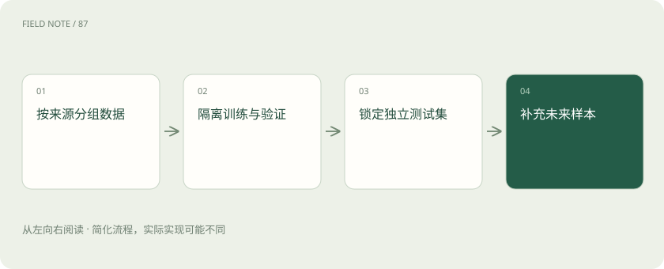

先读哪些知识
先用一个类比理解
像考试分开练习卷与保密卷，反复照答案改方案会污染考试。
类比只帮助建立直觉，不等同于技术的完整机制。
一图看懂

概念边界
训练集用于更新参数，验证集用于选择方案，测试集用于最终独立检查。若反复查看测试结果再调整提示或数据，测试集就逐渐参与了开发，分数不再代表真正陌生问题的表现。
内部怎样运作
同一文档的近似段落、同一客户的相似会话可能跨集合泄露。可以按时间、来源或实体分组切分，并保留未来新样本。公开题库还可能已进入模型训练，不能只靠文件名不同判断独立。
把机制放进具体场景
同一份手册的两个近似段落分别进入训练和测试，模型可能只是记住措辞。按文档或设备系列分组，可减少这种泄露；若目标是未来业务，还可以用较早数据开发、较晚数据测试，检查版本变化的影响。
取舍与容易忽略的限制
评测集应随着真实任务变化补充，但不能每次看到结果不满意就改掉难题。需要区分标注错误、过时任务与系统能力不足，并记录调整原因。测试题泄露不仅可能来自训练材料，也可能来自提示开发、人工挑选和重复试验；因此独立性是一种持续维护的流程，而非一次随机分割操作。
放进真实场景
SCENARIO
同一客户连续追问的多个会话若分别落入开发集与测试集，关键背景可能相同。按客户或完整任务分组，比逐条随机切分更能减少这种重叠。
别踩这个误区
评测集需要代表实际任务分布，同时单列关键困难场景，不能仅收集容易自动判分的题。
想一想
测试题没有直接用于训练，就一定独立吗？
不一定，近似副本、共享实体及反复依据测试结果调参都会造成污染。
关联阅读
资料与边界
本文为原创知识讲解。类比和图示经过简化；示例数字不代表实测或报价。整理日期：2026-11-04。文末列出对应技术的原始资料，具体功能与版本支持请以原文为准。